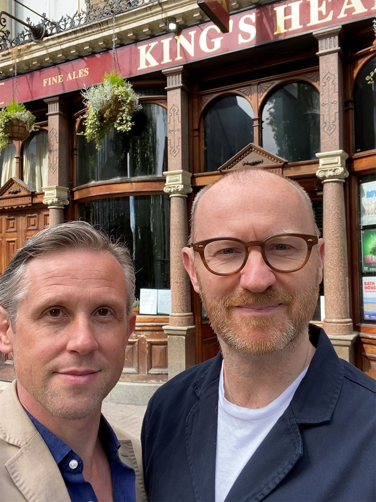

Keeping Culture Alive This Summer
We hope you are well and safe. With so much uncertainty at the moment, we're proud to be working with some incredible clients who are powering through despite enormous pressure. Two of the most iconic venues in Islington: the Union Chapel and the King's Head Theatre are keeping culture alive as well as supporting their local communities. Production company, Brave New Media, is back with a powerful documentary which reveals how Queen Elizabeth II was used, unbeknown to her, in a secret MI6/CIA plot to destroy Iran's democracy.
Union Chapel
From Elton John to Amy Winehouse, Union Chapel is an internationally renowned music venue which promotes headline and emerging acts. All Union Chapel profits support conservation of their Gothic building and wider charitable work. This includes the Margins homelessness project. During the pandemic, together with other charities, Union Chapel transformed its performance space into a foodbank and set up a befriending service for the vulnerable. Last Saturday (6 June) singer/songwriter, Laura Marling, made music history by launching her first online gig following social distancing guidelines for thousands of fans across the UK, Europe and the US who watched via livestream. Could this be a blueprint for the music industry until it is safe for venues to reopen? Shout out to singer/songwriter, Frank Turner and his wife, actor/singer, Jess Guise who supported Union Chapel's crowdfunding campaign in an online concert. The venue is currently just over halfway its fundraising goal of £100,000 - you can donate here. The venue has received coverage in the Observer, Rolling Stone and Music Week and was featured in a fascinating piece on ITV.
King's Head Theatre
Following lockdown, actor/writers Mark Gatiss and Ian Hallard came forward to support the King's Head Theatre's emergency fundraising campaign. As Islington locals, the couple passionately believe in the importance of this civic space which is also a hub for the LGBTQI+ community. London's first pub theatre must raise £100,000 to stay afloat - it has raised over 85k so far - you can donate here. Mark Gatiss was interviewed on BBC London TV, The Robert Elms show and The Stage. The theatre celebrates its 50th birthday this year, and despite being closed, it is keeping it's community together by moving online. Check out #KHTOnline - each weekday at 1pm live on Instagram and Facebook. From skills sessions with industry experts to a book club #DistancednotDisconnected.
The Queen And The Coup

The Queen and the Coup (14 June 2020, 9pm) is the latest documentary from Brave New Media (D-Day: the King Who Fooled Hitler, Spying on the Royals), written, directed and produced by Paul Elston. The film reveals the story of how Queen Elizabeth II's name was deployed in a plot to topple Iran's democractic leader in favour of an all-powerful Shah. Planned by MI6 and executed by the C.I.A. in the first anniversary of the Queen's reign (February 1953) the coup destroyed Iran's democracy and impacted relations with the West until this day. To this day, the Queen did not know of her role in the 1953 coup, and would probably have never known, had it not been for the investigative probing of historians Richard Aldrich and Rory Cormac at the U.S. national archives. You can now watch the film on All 4. Checkout The Times and Mail Online for background to the story.